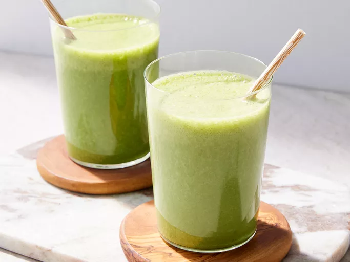

Home
Spinach and Banana Power Smoothie

Description
Spinach and Banana Power Smoothie is a nutritious and energizing drink
packed with vitamins and minerals,
combining the sweetness of banana with the health benefits of spinach.
It's perfect for a quick breakfast or a post-workout boost.
Ingredients
- 1 ripe banana (sliced)
- 1 cup fresh spinach (washed)
- 1 cup milk (or almond milk)
- ½ cup Greek yogurt (optional)
- ½ teaspoon vanilla extract (optional)
- Sugar (optional)
- A few ice cubes (for a chilled smoothie)
Steps
- Add the banana, spinach, milk, and Greek yogurt into a blender.
- Blend until smooth and creamy.
- Add honey and vanilla extract if desired, and blend again
- Toss in ice cubes and blend for a refreshing texture.
- Pour into a glass and enjoy immediately.